mtPaint is able to create and use up to three utility channels - Alpha, Selection and Mask. The Channels menu has various options which are used to handle these features. At any time these channels will have the same geometry as the image being edited. You can display the channels as overlays and prescribe the colour and opacity of these overlays using the 'Configure Overlays' option.
You can edit any of the channels by selecting it from the menu and then using the normal painting tools. The value of the pixels to be plotted is taken from the 'Settings Toolbar'.
An image uses an alpha channel in order to determine how transparent a given pixel is. Alpha channels can be used to smoothly blend the edges of one image when super-imposing it onto another image, such as with layers. This is very useful for things like text.
Alpha blending can either be done in a naive way, or with gamma correction if enabled in the Preferences (see 6.2.1).
In the main editing window, a pixel that is made transparent by the alpha channel will show the chequered pattern underneath like this:
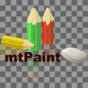
As you can draw in the alpha channel directly, mtPaint does not need an eraser tool; to "erase" some part of image to transparent, you just draw with transparency (alpha value 0) over it.
If you want to edit just the alpha channel it may be convenient to hide the image channel or show the alpha channel as an overlay. These options can be toggled on and off with the Channels menu. This is what the above image looks like with these toggles switched on:
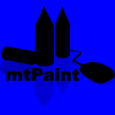
These options affect all layers at once, unless 'Enable overlays by layer' is toggled on in the Preferences window; then, you can modify the appearance of just some layers, leaving the rest displayed in the normal way.
If you disable alpha in the Channels menu, all pixels will display as fully opaque, and processes which respect alpha transparency - such as image scaling, rotating, skewing, or Gaussian blur - will ignore it.
When you have an alpha channel and you are painting to the image channel, it may be convenient to couple painting actions between the image and alpha channels (or to keep them separate). For example here are the results of painting a rectangle with the 'Couple RGBA Operations' toggled on and off via the Channels menu:
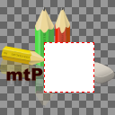
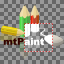
Note: Gaussian Blur of an RGBA image affects both image and alpha channels when this is on (respects alpha transparency when "Disable alpha" is off, or blurs them separately when it is on).
RGB images with alpha transparency can be stored in two different ways. One way is to store raw RGB values and alpha values as separate and independent channels; this is called "unassociated alpha". Another way is to store RGB values not raw, but premultiplied by corresponding alpha value, which is then called "associated alpha". mtPaint, like most other image processing programs, stores images with unassociated alpha, to be able to manipulate RGB and alpha independently of one another, and not lose RGB data when zeroing out alpha. On the other hand, rendering software prefers associated alpha, because with RGB values already multiplied by alpha, less work remains to be done in real time when doing alpha blending. Some image formats, such as TIFF and TGA, support both types of alpha, but are frequently mislabelled; other formats such as PNG or BMP support just one type of alpha, and usually don't define which - in practice it means that it can be both types equally likely. mtPaint automatically converts images with definitely recognized associated alpha to unassociated - but type of alpha cannot be autodetected reliably, and when autodetection fails, "Unassociate Alpha" allows one to convert a misdetected image with associated alpha to unassociated.
The selection channel is used by the copy function in order to include only certain parts of the image. For example you may want to copy and paste an elliptical shaped area like this:
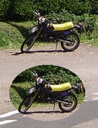
With selection channel, all the varied functions for creating, modifying, adding, subtracting, etc., etc. of selections become simple, regular drawing operations. You create an elliptical selection by filling an ellipse in the selection channel; you feather a selection by applying a blur to the selection channel; you shrink a selection by eroding, or grow it by dilating; invert it by - yes - just inverting the channel; add to a selection by filling an additional selected area, or just by drawing over the parts you want selected; or subtract from it by filling/drawing with 0 (which is, conveniently, colour B by default). It is because of this that mtPaint does not need any of these operations in the Selection menu; all of them, and many more, are easily done with regular drawing tools and effects.
Pasting feathered selections is affected by the "Use gamma correction when painting" setting, see section 6.2.1.
In the section 7.5 below, there are several examples of how you can use the selection channel in various image editing tasks.
The mask channel is used to protect certain areas of the image from being changed by the painting tools. For example you can protect an elliptical shaped area like this to avoid spraying pixels over it:
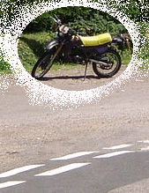
The mask channel can also be used to selectively apply effects such as blur, sharpen or any kind of colour transformation.
Normally each mask pixel is completely set or cleared (255 or 0), but partial values in between can be used to offer semi protection (optionally with gamma correction, see 6.2.1). See section 7.5.8 for an example of this.
If you are editing an image with any type of channel, mtPaint will save this data within the PNG file format. Any other format except mtPaint's own PMM will not save this data except maybe the alpha channel (see section A.2 for which formats do what when), so if you need to keep the channel you will need to use the PNG or PMM format or save the channel individually using the Channels menu.
Technically, in PNG the channel is saved as a compressed private chunk which means that mtPaint will be able to recognise this data, but other image editors will not.
This method fails for indexed palette images which contain another, non-transparent palette colour with same RGB values as the transparent one. This can be prevented by first changing transparent colour's RGB to something otherwise unused.
Another method is to:
It is possible to cut out text shapes from a photo like this:
This technique works with all images. For example you could use it to cut out shapes from a gradient you have created.
It is possible to cut out text shapes from a photo and use them as web graphics like this:
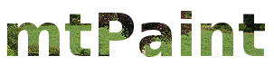
It is possible to use the Gaussian Blur effect to feather the edge of any channel like this:
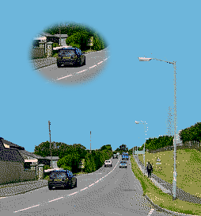
It is also possible to use a gradient to achieve other types of feathered edges like this:
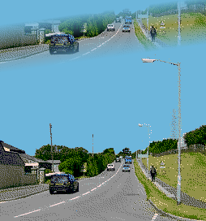
It is possible to use an alpha channel to create outlines on an image like this:
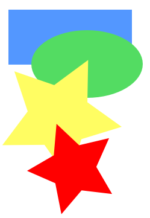
It is possible to use partial masking to create image transition effects. For example I created the following image by doing the following:
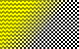
It is possible to emulate the Magic Wand tool that appears in other graphics programs by using a selection channel and the flood fill tool. For example, here is the start image:
In order to copy and paste the red star, you would do the following:
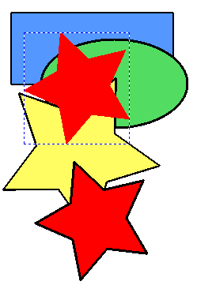
It is also possible to use this flood fill method several times before copying and pasting in order to add several areas from the original image to the selection. For example I could flood fill the blue and yellow shapes to achieve this result:
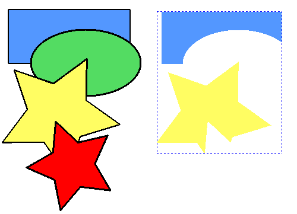
It is possible to replace one colour without touching others, when using any drawing tool. In indexed mode, you can do that using colour mask:
In RGB mode, you can use the colour-selective mode:
Alternately, you can use masking: